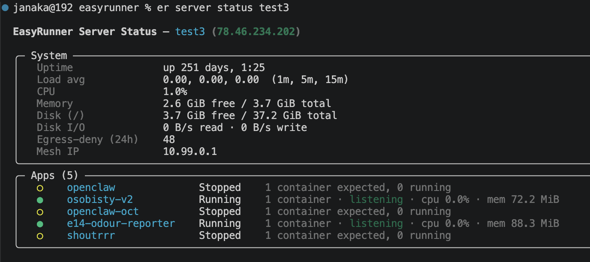

EasyRunner July 2026 Update
Progress update since the mid-June post: the theme was reducing the blast radius if an vulnerability gets exploited. container hardening on by default, outbound egress default-deny, hardening at the edge, per-service domains, real resource monitoring, and skills so your coding agent can drive EasyRunner.
If the mid-June update was about resilience — EasyRunner being able to back up and restore its own state — this stretch has been about containment. Limiting how far a bad day can spread.
The reason is not theoretical. In early July I wrote up a real compromise of an app running on EasyRunner: a CVSS 10.0 RCE in React Server Components (React2Shell, CVE-2025-66478) that got code running inside a container, which then wrote a payload to /tmp, executed it, and started making outbound connections. That post described what happened and what I patched by hand. Most of what shipped since is the platform version of those fixes — turned into defaults that apply to every app on every server, whether or not anyone remembers to.
Seventeen releases went out, v0.43 to v0.57. Here's what's worth knowing about.
-
Container hardening is now on by default — Every app container EasyRunner generates gets
no-new-privileges(so a setuid binary can't be used to escalate) andnoexec,nosuid,nodevtmpfs mounts on the world-writable temp directories/tmp,/var/tmpand/dev/shm. That second one directly blocks the write-to-/tmp-then-execute step from the incident above — the payload can land, but it can't run. There's no configuration to turn on and near-zero compatibility cost. If a service already mounts one of those paths itself, EasyRunner leaves it alone rather than colliding with your own volume. -
A
strictlevel for apps that can take it — Hardening is set per service with a new label, andstrictadds a read-only root filesystem and drops all Linux capabilities. That closes the gapstandardleaves open: blocking exec from temp directories doesn't help if the app can write a payload somewhere else on the rootfs. It's opt-in because plenty of apps write to their own filesystem at runtime and would break.services: web: image: ghcr.io/acme/web:latest labels: xyz.easyrunner.service.security-hardening: "strict" # or "standard" (default) / "off"Unrecognised or blank values fall back to
standard, so a typo leaves hardening on, never silently off. One YAML gotcha worth knowing: a bare unquotedoffparses as the booleanfalse, so quote it if you genuinely need the escape hatch. -
Outbound traffic is default-deny — The other half of the incident was what the compromised container did next: outbound scanning and command-and-control, which is what got the host flagged by the provider. EasyRunner's host firewall policy now constrains egress for the uid that all app containers and Caddy run under. Established connections, loopback, the mesh interface, DNS and outbound 80/443 are allowed; everything else for that uid is logged (rate-limited, tagged
er-egress-deny) and rejected. Root and system traffic are untouched, so WireGuard andaptkeep working — the chain default is never flipped to DROP. IPv4 today; the IPv6 mirror is tracked as a follow-up.Default-deny still leaves 80/443 open, which is where most exfiltration would go. Narrowing an individual app further — pinning it to a named set of destinations rather than all outbound web traffic — is the next phase, and is still in progress rather than shipped.
-
Hardening at the edge — Caddy now does work on behalf of every app it proxies, patched or not. It strips the
x-middleware-subrequestrequest header from every site, which defuses CVE-2025-29927 — the Next.js middleware auth bypass, and the sibling bug to the RCE above. The header has no legitimate client use, so it goes for all apps, not just the ones labelled Next.js. Caddy also 403s well-known scanner paths (.env,.git,wp-admin,xmlrpc.phpand friends) before they reach your app, and sets baseline response headers —X-Content-Type-Options,X-Frame-Options,Referrer-Policy,Permissions-Policy. Those headers are set-if-absent, so an app that deliberately sets its own stricter policy wins, the same way a CDN would behave. HSTS is deliberately left out for now: its browser-cachedmax-agemakes it a risky thing to switch on by default for everyone. -
You can verify the hardening is actually on — Defaults you can't check aren't much comfort.
er server doctorgained two checks: that the egress default-deny policy is actually applied on this host, and that fail2ban is running with the jails it expects (sshdandrecidivetoday). Each failure comes with the command that fixes it —er server reapply-firewallander server reapply-fail2banrespectively.er server statusnow also reports a 24-hour count of egress denials, which is an observation rather than a verdict, but a non-zero number on a quiet app is worth a look.
Upgrading an existing server
None of the firewall work applies retroactively — existing servers keep running exactly as they were until you ask for it.
er server reapply-firewall <server>applies the egress default-deny policy, and installs the boot-time restore fix described below.- Redeploy each app to pick up container hardening, the Caddy edge headers, and the per-app network join.
Both are idempotent and safe to re-run. No re-initialisation needed.
-
Every web service gets its own domain — Apps are no longer limited to a single public service. Declare
xyz.easyrunner.service.domainon each web service in your compose file and EasyRunner routes each one at its own domain, with its own Caddy site. The app-level--custom-domain/--domainflags are gone: your compose file is now the single source of truth for domains, and old stored values are ignored on load, so nothing to migrate. Alongside that:- DNS moved to deploy time —
er app deployprovisions the DNS record for each public domain before deploying, so certificate issuance succeeds first try instead of failing and retrying. Deploy prints one URL per routed service. - Env vars follow the same shape — each web container gets its own
EASYRUNNER_APP_DOMAIN/EASYRUNNER_APP_URL, and every container getsEASYRUNNER_SERVICE_<NAME>_URL/_DOMAINfor each public service, so services can build links to each other without hardcoding anything. - Internal services are reachable by name — private services get a network alias, so a sibling can just use
redis://redis:6379. - Cloudflare gets skipped when it isn't needed — EasyRunner now queries the domain's authoritative nameserver first and returns immediately if the record already matches, with no API call and no token needed. The lookup is also record-type aware, so a hostname-based server correctly gets a CNAME instead of a broken A record.
- DNS moved to deploy time —
-
statustells you what's actually happening —er server statusnow reports CPU percentage, disk I/O rates, per-container CPU and memory, and a readiness signal for each app. Readiness is deliberately worded as "listening" / "not listening" rather than "serving", because it's a port-level probe — it catches "the container is up but nothing is on the port", not an app returning 500s.er app statusgrew the same detail scoped to one app. All of it comes from a small standard-library collector shipped inline over a single SSH round-trip, so it stays fast.

-
--jsonon the status commands — Bother server statusander app statustake--jsonnow. Humans keep the tables by default; scripts and agents get structured output they don't have to scrape. -
Your coding agent can drive EasyRunner — The
easyrunner-skillsplugin is now published as its own installable package for Claude Code and compatible tools, and it ships automatically with each release. It covers preparing a repo (adding a Containerfile and compose file), registering an app, deploying it, and updating its configuration — plus a new server-provisioning skill covering the fuller server create→init→ smoke test →deletelifecycle, including the traps worth knowing about, like the difference between deleting and merely removing a VM. Being able to hand the whole deployment to an agent has been one of the pitches for a while; it's now something you can install rather than something I claim. -
Reliability fixes that mattered more than they sound — A run of live testing turned up several failures that only appear after a restart, which is the worst time to find them.
- App routes survive a Caddy restart — Caddy's routes are applied over its admin API and lived only in memory, so any restart (reboot, image update, crash) silently dropped every route on the host, and each app stayed down until individually redeployed. Caddy now resumes from its own autosaved config.
- ...and so does its network membership — restoring routes wasn't enough: network-isolated apps came back with a valid route pointing at a backend Caddy could no longer reach, which is a 502 instead of an outage, but still down. A startup hook now re-attaches Caddy to every app network automatically, with no deploy needed.
- Firewall rules survive a reboot — EasyRunner saved the iptables ruleset but nothing ever replayed it at boot, so a rebooted host came back reachable over SSH and serving nothing publicly, with every container looking healthy. Saving without restoring isn't persistence. The restore units are now installed properly.
- Per-app network isolation actually isolates — both bundled compose templates hardcoded a shared project name, which quietly put every app scaffolded from them on the same network. Templates now use the app's own name, with a test to stop it creeping back.
- Plus:
er server initno longer wipes existing app routes when re-run, renaming a compose project cleans up the units it orphans, and pre-Quadlet volumes are migrated on init instead of coming back empty.
-
Smaller things worth knowing —
er app secret setaccepts--value-fileor stdin, so secrets don't have to go through your shell history.er app secret listshows masked previews, so you can tell whether a value is the one you think it is without revealing it.er app addcan register a Flow B app in one step with--deploy-flowand--compose-file. Commands that talk to SSH-locked-down servers —er app status,er app test, deploys,er mesh doctor— now correctly route over the mesh. Source builds on a hardened host clone over GitHub's SSH-on-443 endpoint, since the new egress policy blocks port 22. Ander server createuses Hetzner'scx23, the replacement for the now-retiredcx22.
The theme here is blast radius. An alpha self-hosting tool is not going to make apps un-hackable — the RCE that started all this was a CVSS 10.0 in a dependency, and no amount of platform hardening prevents that. What a platform can do is decide how much a compromised app gets to touch: whether it can execute what it downloads, whether it can call home, whether it can reach the app next to it, and whether you find out. That's most of what shipped this month, and it's on by default rather than a checklist you have to remember.
We're still in alpha testing. If you'd like to get involved, drop me a line at janaka@easyrunner.xyz or follow me on Twitter/X @janaka_a.